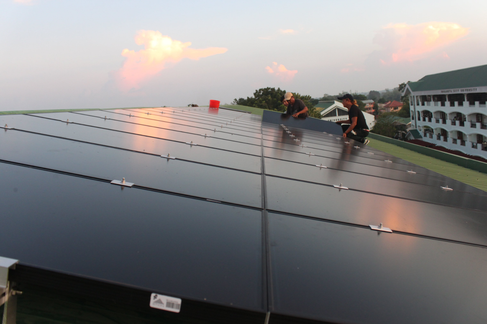

Renewable Energy — Grid-connected photovoltaic system on the Dr. Teofidez E. Calvero Building roofUrdaneta City University has installed solar panels across its campus to harness renewable energy from the sun, providing a clean, sustainable, and reliable source of electricity for campus operations. This initiative helps reduce the university's dependence on externally purchased power, lowering energy costs while promoting financial and operational efficiency.
Beyond cost savings, the solar program reflects UCU's commitment to environmental stewardship and energy efficiency, contributing to the reduction of carbon emissions and demonstrating the practical benefits of renewable energy in an educational setting. By integrating solar technology into its infrastructure, the university not only supports a greener campus but also cultivates a culture of sustainability and innovation among students, faculty, and staff.